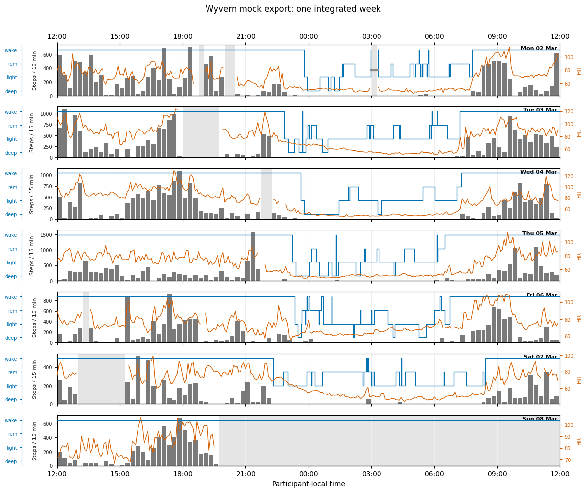
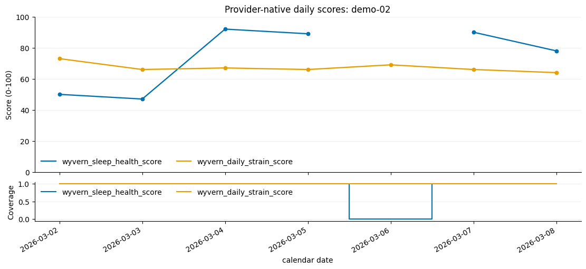
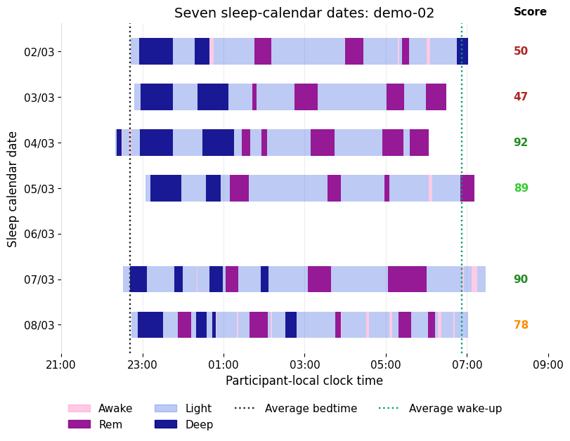
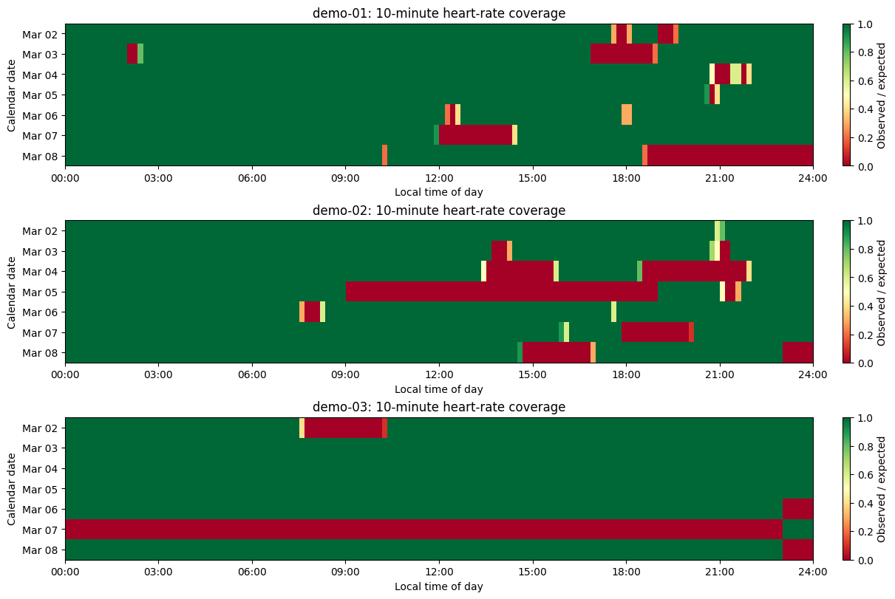

Implement a custom pywearable loader
A loader adapts one project or provider to pywearable’s canonical schemas. Domain functions then calculate features without knowing the original file names or field conventions.
Here we implement WyvernLoader for the Wyvern Band, a fictional wearable. The example export contains three participants and seven days, with deliberately inconsistent field names, units, and file formats.
We will inspect the provider files, translate deliberately inconsistent fields into canonical schemas, validate the loader boundary, and then use the normal feature and visualization APIs.
[1]:
import json
import sys
from pathlib import Path
import matplotlib.pyplot as plt
import pandas as pd
from IPython.display import display
REPO_ROOT = Path.cwd().resolve()
if not (REPO_ROOT / "src" / "pywearable").is_dir():
REPO_ROOT = next(
parent
for parent in Path.cwd().resolve().parents
if (parent / "src" / "pywearable").is_dir()
)
sys.path.insert(0, str(REPO_ROOT / "src"))
from pywearable import (
activity,
heart_rate,
provider_features,
respiration,
schema,
sleep,
visualization,
)
from pywearable.loader import BaseLoader
DATA_ROOT = REPO_ROOT / "docs" / "_notebooks" / "mock_provider_data"
START = pd.Timestamp("2026-03-02")
END = pd.Timestamp("2026-03-09")
WYVERN_SLEEP_HEALTH_SCORE = "wyvern_sleep_health_score"
WYVERN_DAILY_STRAIN_SCORE = "wyvern_daily_strain_score"
Inspect the fictional provider export
The export uses one directory per participant and mixes TSV, CSV, and JSON files. Source names mix camel case and snake case, and none is assumed to be canonical.
[2]:
participant_dirs = sorted(
path for path in DATA_ROOT.glob("demo-*") if path.is_dir()
)
participants_source = pd.concat(
[
pd.read_csv(path / "participant.tsv", sep=" ")
for path in participant_dirs
],
ignore_index=True,
)
pulse_source = pd.concat(
[
pd.read_csv(path / "pulse.tsv", sep=" ")
for path in participant_dirs
],
ignore_index=True,
)
movement_source = pd.concat(
[pd.read_csv(path / "movement.csv") for path in participant_dirs],
ignore_index=True,
)
sleep_source = pd.json_normalize(
[
night
for path in participant_dirs
for night in json.loads(
(path / "sleep.json").read_text()
)["nights"]
]
)
score_source = pd.DataFrame(
[
record
for path in participant_dirs
for record in json.loads(
(path / "daily_scores.json").read_text()
)["records"]
]
)
inventory = pd.DataFrame(
[
("demo-*/participant.tsv", "TSV", len(participant_dirs), len(participants_source)),
("demo-*/pulse.tsv", "TSV", len(participant_dirs), len(pulse_source)),
("demo-*/movement.csv", "CSV", len(participant_dirs), len(movement_source)),
("demo-*/sleep.json", "JSON", len(participant_dirs), len(sleep_source)),
("demo-*/daily_scores.json", "JSON", len(participant_dirs), len(score_source)),
],
columns=["path pattern", "format", "files", "records"],
)
display(inventory)
display(
pulse_source.head(3),
movement_source.head(3),
sleep_source[
[
"memberCode",
"sleepDate",
"startedAt",
"sleepSeconds",
"nightlyRespiration.meanBreathsPerMinute",
]
].head(3),
score_source.head(3),
)
| path pattern | format | files | records | |
|---|---|---|---|---|
| 0 | demo-*/participant.tsv | TSV | 3 | 3 |
| 1 | demo-*/pulse.tsv | TSV | 3 | 26499 |
| 2 | demo-*/movement.csv | CSV | 3 | 1857 |
| 3 | demo-*/sleep.json | JSON | 3 | 19 |
| 4 | demo-*/daily_scores.json | JSON | 3 | 21 |
| memberCode | capturedAtLocal | utcOffsetMinutes | pulseBpm | readingQuality | |
|---|---|---|---|---|---|
| 0 | demo-01 | 2026-03-02T00:00 | 60 | 52 | good |
| 1 | demo-01 | 2026-03-02T00:01 | 60 | 52 | good |
| 2 | demo-01 | 2026-03-02T00:02 | 60 | 54 | good |
| member_code | intervalStart | intervalSeconds | stepCount | |
|---|---|---|---|---|
| 0 | demo-01 | 2026-03-02T00:00 | 900 | 0.0 |
| 1 | demo-01 | 2026-03-02T00:15 | 900 | 0.0 |
| 2 | demo-01 | 2026-03-02T00:30 | 900 | 0.0 |
| memberCode | sleepDate | startedAt | sleepSeconds | nightlyRespiration.meanBreathsPerMinute | |
|---|---|---|---|---|---|
| 0 | demo-01 | 2026-03-02 | 2026-03-01T23:22:00 | 28200 | 14.8 |
| 1 | demo-01 | 2026-03-03 | 2026-03-02T23:47:00 | 27540 | 14.8 |
| 2 | demo-01 | 2026-03-04 | 2026-03-03T22:51:00 | 29880 | 16.7 |
| memberCode | day | sleepHealthScore | dailyStrain_score | |
|---|---|---|---|---|
| 0 | demo-01 | 2026-03-02 | 80.0 | 63 |
| 1 | demo-01 | 2026-03-03 | 79.0 | 69 |
| 2 | demo-01 | 2026-03-04 | 77.0 | 71 |
Plan the translation
Source field |
Canonical field |
Conversion |
|---|---|---|
|
|
Parse the local clock, subtract the offset for UTC, and retain numeric beats per minute. |
|
|
Use the participant metadata offset for both clocks, convert seconds to milliseconds, and preserve zero-step intervals. |
|
|
Retain the provider’s night identifier and sleep-calendar label; parse session bounds. |
|
|
Convert seconds to milliseconds and aggregate stage durations by night. |
|
|
Flatten stage intervals and map provider codes to canonical sleep-stage values. |
|
|
Expose the available nightly summary without inventing respiration samples. |
|
|
Make the score available in sleep views while retaining its provider-native feature name. |
|
|
Retain the fictional provider prefix and native daily grain. |
A BaseLoader subclass implements the required sleep and heart-rate methods. Optional methods are added only for streams present in the export. Capability attributes tell pywearable which clocks and source grains are available.
Implement the adapter
Each method returns canonical columns and applies [start_date, end_date) to the clock documented by that method. Schema preparers normalize types, add optional columns, and validate required fields. Returning a typed empty canonical frame is preferable to inventing observations when a supported interval has no rows.
[3]:
class WyvernLoader(BaseLoader):
'''Adapt participant-folder exports from the fictional Wyvern Band.'''
activity_source = "samples"
activity_primary_resolution = "15min"
activity_time_columns = (schema.UTC_TIME_COL, schema.LOCAL_TIME_COL)
heart_rate_time_columns = (schema.UTC_TIME_COL, schema.LOCAL_TIME_COL)
respiratory_rate_source = "provider_summary"
provider_features = frozenset(
{WYVERN_SLEEP_HEALTH_SCORE, WYVERN_DAILY_STRAIN_SCORE}
)
provider_feature_definitions = {
WYVERN_SLEEP_HEALTH_SCORE: {"grain": "daily", "numeric": True},
WYVERN_DAILY_STRAIN_SCORE: {"grain": "daily", "numeric": True},
}
_stage_codes = {
"AWK": schema.SLEEP_STAGE_AWAKE_STAGE_VALUE,
"LT": schema.SLEEP_STAGE_LIGHT_STAGE_VALUE,
"DP": schema.SLEEP_STAGE_DEEP_STAGE_VALUE,
"REM": schema.SLEEP_STAGE_REM_STAGE_VALUE,
"UNM": schema.SLEEP_STAGE_UNMEASURABLE_STAGE_VALUE,
"ASL": "asleep",
}
def __init__(self, data_root):
'''Read every participant directory into source-shaped tables.
Each ``demo-*`` directory is self-contained. TSV, CSV, and
JSON records are concatenated here, but no canonical
conversion occurs until a ``load_*`` method is called.
'''
data_root = Path(data_root)
participant_dirs = sorted(
path for path in data_root.glob("demo-*") if path.is_dir()
)
self._participants = pd.concat(
[
pd.read_csv(path / "participant.tsv", sep=" ")
for path in participant_dirs
],
ignore_index=True,
)
self._heart_rate = pd.concat(
[
pd.read_csv(path / "pulse.tsv", sep=" ")
for path in participant_dirs
],
ignore_index=True,
)
self._activity = pd.concat(
[pd.read_csv(path / "movement.csv") for path in participant_dirs],
ignore_index=True,
)
sleep_nights = [
night
for path in participant_dirs
for night in json.loads(
(path / "sleep.json").read_text()
)["nights"]
]
self._sleep = pd.json_normalize(sleep_nights)
stage_rows = []
for night in sleep_nights:
for segment in night["stageSegments"]:
stage_rows.append(
{
"memberCode": night["memberCode"],
"nightKey": night["nightKey"],
**segment,
}
)
self._stages = pd.DataFrame(stage_rows)
self._scores = pd.DataFrame(
[
record
for path in participant_dirs
for record in json.loads(
(path / "daily_scores.json").read_text()
)["records"]
]
)
def get_user_ids(self):
'''Return participant identifiers read from ``participant.tsv``.'''
return sorted(self._participants["memberCode"].unique())
@staticmethod
def _filter(frame, column, start_date, end_date):
'''Apply half-open ``[start_date, end_date)`` canonical bounds.'''
values = pd.to_datetime(frame[column])
mask = pd.Series(True, index=frame.index)
if start_date is not None:
mask &= values >= pd.Timestamp(start_date)
if end_date is not None:
mask &= values < pd.Timestamp(end_date)
return frame.loc[mask].copy()
@staticmethod
def _utc_from_local(local_time, offset_minutes):
'''Subtract provider UTC offsets from naive local timestamps.'''
return pd.to_datetime(local_time) - pd.to_timedelta(
offset_minutes, unit="m"
)
def load_heart_rate(
self,
user_id,
start_date=None,
end_date=None,
time_col=schema.LOCAL_TIME_COL,
):
'''Convert ``pulse.tsv`` rows to canonical heart-rate samples.
``capturedAtLocal`` becomes ``local_time``; the per-row
minute offset supplies both ``timezone`` and ``utc_time``;
``pulseBpm`` becomes numeric ``heart_rate``. Filtering uses
the caller-selected canonical clock.
'''
rows = self._heart_rate[
self._heart_rate["memberCode"].eq(user_id)
].copy()
local_time = pd.to_datetime(rows["capturedAtLocal"])
offsets = pd.to_timedelta(rows["utcOffsetMinutes"], unit="m")
canonical = pd.DataFrame(
{
schema.UTC_TIME_COL: self._utc_from_local(
local_time, rows["utcOffsetMinutes"]
),
schema.LOCAL_TIME_COL: local_time,
schema.TIMEZONE_COL: offsets,
schema.HEART_RATE_COL: rows["pulseBpm"],
}
)
canonical = schema.prepare_heart_rate_samples(canonical)
return self._filter(canonical, time_col, start_date, end_date)
def load_activity_samples(self, user_id, start_date=None, end_date=None, **kwargs):
'''Convert ``movement.csv`` intervals to canonical activity samples.
The participant metadata supplies the UTC offset missing
from each movement row. ``intervalSeconds`` is converted to
``duration_in_ms`` and ``stepCount`` to ``activity_steps``;
observed zero-step intervals remain observations, not nulls.
'''
rows = self._activity[
self._activity["member_code"].eq(user_id)
].copy()
local_time = pd.to_datetime(rows["intervalStart"])
offset_minutes = self._participants.set_index("memberCode").loc[
user_id, "utcOffsetMinutes"
]
canonical = pd.DataFrame(
{
schema.UTC_TIME_COL: self._utc_from_local(
local_time, offset_minutes
),
schema.LOCAL_TIME_COL: local_time,
schema.TIMEZONE_COL: pd.to_timedelta(
offset_minutes, unit="m"
),
schema.DURATION_IN_MS_COL: rows["intervalSeconds"] * 1_000,
schema.ACTIVITY_STEPS_COL: rows["stepCount"],
}
)
canonical = schema.prepare_activity_samples(canonical)
return self._filter(
canonical, schema.LOCAL_TIME_COL, start_date, end_date
)
def load_sleep_summary(self, user_id, start_date=None, end_date=None, drop_duplicates=True):
'''Convert nightly JSON records to canonical sleep summaries.
Provider session identifiers, calendar labels, and local
bounds are retained. Durations are converted from seconds
to milliseconds, flattened stage intervals are totaled by
type, and ``sleepHealthScore`` is joined as canonical
``overall_sleep_score`` for sleep-specific displays.
'''
rows = self._sleep[self._sleep["memberCode"].eq(user_id)].copy()
score_rows = self._scores[
self._scores["memberCode"].eq(user_id)
][["memberCode", "day", "sleepHealthScore"]]
rows = rows.merge(
score_rows,
left_on=["memberCode", "sleepDate"],
right_on=["memberCode", "day"],
how="left",
)
stage_totals = (
self._stages[self._stages["memberCode"].eq(user_id)]
.groupby(["nightKey", "stageCode"])["durationSeconds"]
.sum()
.unstack(fill_value=0)
)
rows = rows.merge(stage_totals, on="nightKey", how="left")
def stage_duration(code):
return rows.get(code, pd.Series(0, index=rows.index)) * 1_000
canonical = pd.DataFrame(
{
schema.SLEEP_SUMMARY_ID_COL: rows["nightKey"],
schema.CALENDAR_DATE_COL: rows["sleepDate"],
schema.LOCAL_TIME_COL: rows["startedAt"],
schema.LOCAL_END_TIME_COL: rows["endedAt"],
schema.DURATION_IN_MS_COL: rows["sleepSeconds"] * 1_000,
schema.SLEEP_SUMMARY_AWAKE_DURATION_IN_MS_COL: rows["awakeSeconds"] * 1_000,
schema.SLEEP_SUMMARY_UNMEASURABLE_SLEEP_DURATION_IN_MS_COL: rows["unmeasurableSeconds"] * 1_000,
schema.SLEEP_SUMMARY_LIGHT_SLEEP_DURATION_IN_MS_COL: stage_duration("LT"),
schema.SLEEP_SUMMARY_DEEP_SLEEP_DURATION_IN_MS_COL: stage_duration("DP"),
schema.SLEEP_SUMMARY_REM_SLEEP_DURATION_IN_MS_COL: stage_duration("REM"),
schema.SLEEP_SUMMARY_OVERALL_SLEEP_SCORE_COL: rows["sleepHealthScore"],
}
)
canonical = schema.prepare_sleep_summary(canonical)
canonical = self._filter(
canonical, schema.CALENDAR_DATE_COL, start_date, end_date
)
if drop_duplicates:
canonical = canonical.drop_duplicates(schema.CALENDAR_DATE_COL)
return canonical.reset_index(drop=True)
def load_sleep_stage(self, user_id, start_date=None, end_date=None):
'''Convert flattened stage segments to canonical intervals.
``startedAt`` becomes ``local_time``, seconds become
``duration_in_ms``, and Wyvern stage codes map to canonical
``type`` values. ``nightKey`` preserves the required link
to ``sleep_summary_id``. Bounds use interval overlap.
'''
rows = self._stages[
self._stages["memberCode"].eq(user_id)
].copy()
canonical = pd.DataFrame(
{
schema.SLEEP_SUMMARY_ID_COL: rows["nightKey"],
schema.LOCAL_TIME_COL: rows["startedAt"],
schema.DURATION_IN_MS_COL: rows["durationSeconds"] * 1_000,
schema.SLEEP_STAGE_SLEEP_TYPE_COL: rows["stageCode"].map(
self._stage_codes
),
}
)
canonical = schema.prepare_sleep_stages(canonical)
stage_end = canonical[schema.LOCAL_TIME_COL] + pd.to_timedelta(
canonical[schema.DURATION_IN_MS_COL], unit="ms"
)
mask = pd.Series(True, index=canonical.index)
if start_date is not None:
mask &= stage_end > pd.Timestamp(start_date)
if end_date is not None:
mask &= canonical[schema.LOCAL_TIME_COL] < pd.Timestamp(end_date)
return canonical.loc[mask].reset_index(drop=True)
def load_respiration_summary(
self, user_id, start_date=None, end_date=None
):
'''Expose the nightly respiration summary stored in ``sleep.json``.
The two provider fields map directly to canonical
``respiratory_rate_mean`` and ``respiratory_rate_std`` at
``calendar_date`` grain. No sample-level stream is created.
'''
rows = self._sleep[self._sleep["memberCode"].eq(user_id)].copy()
canonical = pd.DataFrame(
{
schema.CALENDAR_DATE_COL: rows["sleepDate"],
schema.RESPIRATORY_RATE_MEAN_COL: rows[
"nightlyRespiration.meanBreathsPerMinute"
],
schema.RESPIRATORY_RATE_STD_COL: rows[
"nightlyRespiration.stdBreathsPerMinute"
],
}
)
canonical = schema.prepare_respiration_summary(canonical)
return self._filter(
canonical, schema.CALENDAR_DATE_COL, start_date, end_date
).reset_index(drop=True)
def load_provider_feature(
self, feature, user_id, start_date=None, end_date=None, **kwargs
):
'''Convert a named daily score to a canonical provider feature.
``daily_scores.json`` uses ``day`` plus two differently
styled score names. The requested source column is renamed
to its registered Wyvern feature and returned at canonical
``calendar_date`` grain, preserving missing score values.
'''
source_columns = {
WYVERN_SLEEP_HEALTH_SCORE: "sleepHealthScore",
WYVERN_DAILY_STRAIN_SCORE: "dailyStrain_score",
}
if feature not in source_columns:
raise ValueError(f"WyvernLoader does not provide {feature!r}")
rows = self._scores[self._scores["memberCode"].eq(user_id)]
canonical = pd.DataFrame(
{
schema.CALENDAR_DATE_COL: rows["day"],
feature: rows[source_columns[feature]],
}
)
canonical = schema.prepare_provider_feature_summary(
canonical, feature
)
return self._filter(
canonical, schema.CALENDAR_DATE_COL, start_date, end_date
).reset_index(drop=True)
loader = WyvernLoader(DATA_ROOT)
print("Participants:", loader.get_user_ids())
Participants: ['demo-01', 'demo-02', 'demo-03']
Validate the canonical boundary
Before using domain functions, inspect each loader method directly. Required columns, dtypes, sorting, duplicate handling, and empty intervals are part of the loader contract.
[4]:
participant = loader.get_user_ids()[0]
hr = loader.load_heart_rate(
participant, START, START + pd.Timedelta(hours=1)
)
activity_samples = loader.load_activity_samples(
participant, START, START + pd.Timedelta(hours=1)
)
summaries = loader.load_sleep_summary(participant, START, END)
stage_intervals = loader.load_sleep_stage(participant, START, END)
respiration_summary = loader.load_respiration_summary(
participant, START, END
)
assert set(schema.HEART_RATE_REQUIRED_COLUMNS) <= set(hr)
assert set(schema.ACTIVITY_SAMPLE_REQUIRED_COLUMNS) <= set(activity_samples)
assert set(schema.SLEEP_SUMMARY_REQUIRED_COLUMNS) <= set(summaries)
assert set(schema.SLEEP_STAGE_REQUIRED_COLUMNS) <= set(stage_intervals)
assert {
schema.CALENDAR_DATE_COL,
schema.RESPIRATORY_RATE_MEAN_COL,
} <= set(respiration_summary)
assert loader.load_respiration(participant, START, END).empty
assert loader.load_heart_rate(
participant, END, END + pd.Timedelta(days=1)
).empty
assert provider_features.get_available_provider_features(loader) == [
WYVERN_DAILY_STRAIN_SCORE,
WYVERN_SLEEP_HEALTH_SCORE,
]
display(hr.head(3), activity_samples.head(3), summaries.head(3))
print("Canonical loader checks passed")
| utc_time | local_time | timezone | heart_rate | |
|---|---|---|---|---|
| 0 | 2026-03-01 23:00:00 | 2026-03-02 00:00:00 | 0 days 01:00:00 | 52 |
| 1 | 2026-03-01 23:01:00 | 2026-03-02 00:01:00 | 0 days 01:00:00 | 52 |
| 2 | 2026-03-01 23:02:00 | 2026-03-02 00:02:00 | 0 days 01:00:00 | 54 |
| utc_time | local_time | timezone | duration_in_ms | activity_steps | |
|---|---|---|---|---|---|
| 0 | 2026-03-01 23:00:00 | 2026-03-02 00:00:00 | 0 days 01:00:00 | 900000 | 0.0 |
| 1 | 2026-03-01 23:15:00 | 2026-03-02 00:15:00 | 0 days 01:00:00 | 900000 | 0.0 |
| 2 | 2026-03-01 23:30:00 | 2026-03-02 00:30:00 | 0 days 01:00:00 | 900000 | 0.0 |
| sleep_summary_id | calendar_date | local_time | local_end_time | duration_in_ms | awake_duration_in_ms | unmeasurable_sleep_duration_in_ms | light_sleep_duration_in_ms | deep_sleep_duration_in_ms | rem_sleep_duration_in_ms | overall_sleep_score | |
|---|---|---|---|---|---|---|---|---|---|---|---|
| 0 | demo-01-night-20260302 | 2026-03-02 | 2026-03-01 23:22:00 | 2026-03-02 07:16:00 | 28200000.0 | 240000.0 | 0.0 | 13740000.0 | 6000000.0 | 8460000.0 | 80.0 |
| 1 | demo-01-night-20260303 | 2026-03-03 | 2026-03-02 23:47:00 | 2026-03-03 07:49:00 | 27540000.0 | 120000.0 | 1260000.0 | 15960000.0 | 3480000.0 | 8100000.0 | 79.0 |
| 2 | demo-01-night-20260304 | 2026-03-04 | 2026-03-03 22:51:00 | 2026-03-04 07:13:00 | 29880000.0 | 240000.0 | 0.0 | 20880000.0 | 3060000.0 | 5940000.0 | 77.0 |
Canonical loader checks passed
Use the normal pywearable APIs
Once the adapter returns canonical streams, no project-specific code is needed for feature extraction.
[5]:
daily_steps = activity.get_activity_statistics(
loader,
statistic=activity.ACTIVITY_STATISTIC_STEPS,
user_id="all",
start_date=START,
end_date=END,
resolution="daily",
)
daily_hr = heart_rate.get_heart_rate_statistics(
loader,
statistic=[
heart_rate.HEART_RATE_STATISTIC_MEAN,
heart_rate.HEART_RATE_STATISTIC_REST,
],
user_id=participant,
start_date=START,
end_date=END,
resolution="daily",
)
nightly_sleep = sleep.get_sleep_statistics(
loader,
statistic=[
sleep.SLEEP_STATISTIC_TIB,
sleep.SLEEP_STATISTIC_TST,
sleep.SLEEP_STATISTIC_WASO,
sleep.SLEEP_STATISTIC_BEDTIME,
],
user_id=participant,
start_date=START,
end_date=END,
resolution="nightly",
)
nightly_respiration = respiration.get_respiration_statistics(
loader,
statistic=[
respiration.RESPIRATORY_RATE_STATISTIC_MEAN,
respiration.RESPIRATORY_RATE_STATISTIC_STD,
],
user_id=participant,
start_date=START,
end_date=END,
resolution="cycle_night",
)
daily_scores = provider_features.get_provider_features(
loader,
feature=[WYVERN_SLEEP_HEALTH_SCORE, WYVERN_DAILY_STRAIN_SCORE],
user_id="all",
start_date=START,
end_date=END,
)
display(
daily_steps.head(6),
daily_hr.head(3),
nightly_sleep.head(3),
nightly_respiration.head(3),
daily_scores.head(6),
)
| activity_steps | activity_steps__coverage | ||
|---|---|---|---|
| user_id | calendar_date | ||
| demo-01 | 2026-03-02 | 13041.0 | 0.960417 |
| 2026-03-03 | 14648.0 | 0.911806 | |
| 2026-03-04 | 19407.0 | 0.979167 | |
| 2026-03-05 | 15370.0 | 0.992361 | |
| 2026-03-06 | 12968.0 | 0.989583 | |
| 2026-03-07 | 8285.0 | 0.905556 |
| heart_rate_mean | heart_rate_mean__coverage | heart_rate_rest | heart_rate_rest__coverage | ||
|---|---|---|---|---|---|
| user_id | local_time | ||||
| demo-01 | 2026-03-02 | 66.378655 | 0.950000 | 50.666667 | 0.950000 |
| 2026-03-03 | 74.034884 | 0.895833 | 47.266667 | 0.895833 | |
| 2026-03-04 | 78.236061 | 0.959028 | 52.000000 | 0.959028 |
| sleep_TIB | sleep_TIB__coverage | sleep_TST | sleep_TST__coverage | sleep_WASO | sleep_WASO__coverage | sleep_bedtime | sleep_bedtime__coverage | ||
|---|---|---|---|---|---|---|---|---|---|
| user_id | calendar_date | ||||||||
| demo-01 | 2026-03-02 | 474.0 | 1.0 | 470.0 | 1.0 | 4.0 | 1.0 | 2026-03-01 23:22:00 | 1.0 |
| 2026-03-03 | 461.0 | 1.0 | 438.0 | 1.0 | 2.0 | 1.0 | 2026-03-02 23:47:00 | 1.0 | |
| 2026-03-04 | 502.0 | 1.0 | 498.0 | 1.0 | 4.0 | 1.0 | 2026-03-03 22:51:00 | 1.0 |
| respiratory_rate_mean | respiratory_rate_mean__coverage | respiratory_rate_std | respiratory_rate_std__coverage | ||
|---|---|---|---|---|---|
| user_id | calendar_date | ||||
| demo-01 | 2026-03-02 | 14.8 | NaN | 1.0 | NaN |
| 2026-03-03 | 14.8 | NaN | 1.2 | NaN | |
| 2026-03-04 | 16.7 | NaN | 2.1 | NaN |
| wyvern_sleep_health_score | wyvern_sleep_health_score__coverage | wyvern_daily_strain_score | wyvern_daily_strain_score__coverage | ||
|---|---|---|---|---|---|
| user_id | calendar_date | ||||
| demo-01 | 2026-03-02 | 80.0 | 1.0 | 63 | 1.0 |
| 2026-03-03 | 79.0 | 1.0 | 69 | 1.0 | |
| 2026-03-04 | 77.0 | 1.0 | 71 | 1.0 | |
| 2026-03-05 | 78.0 | 1.0 | 63 | 1.0 | |
| 2026-03-06 | 80.0 | 1.0 | 64 | 1.0 | |
| 2026-03-07 | 76.0 | 1.0 | 63 | 1.0 |
Visualize one integrated week
The weekly overview needs timestamped activity samples, heart rate, and sleep stages. Implementing those three streams makes the loader-aware visualization available automatically.
[6]:
visualization.plot_weekly_overview(
loader,
participant,
START,
END,
title="Wyvern mock export: one integrated week",
show=False,
)
plt.show()

Compare the provider-native scores
These scores remain provider-specific: pywearable can align and aggregate them, but does not equate them with similarly named scores from another device. A sleep-health score is absent when no nightly sleep result is available; daytime strain can still be present when activity data exists.
[7]:
score_participant = "demo-02"
score_axes = visualization.plot_trajectory(
daily_scores,
[WYVERN_SLEEP_HEALTH_SCORE, WYVERN_DAILY_STRAIN_SCORE],
user_id=score_participant,
title=f"Provider-native daily scores: {score_participant}",
ylabel="Score (0-100)",
show_imputed=False,
show_coverage=True,
show=False,
)
score_axes["trajectory"].set_ylim(0, 100)
plt.show()

Inspect nightly sleep
The compact sleep view uses the canonical summaries and native stage intervals. Because the loader maps sleepHealthScore to canonical overall_sleep_score, it can also be displayed beside each night; unavailable nights and scores remain blank.
[8]:
sleep_participant = "demo-02"
visualization.plot_sleep_summary(
loader,
sleep_participant,
start_date=START,
end_date=END - pd.Timedelta(days=1),
show_scores=True,
title=f"Seven sleep-calendar dates: {sleep_participant}",
show=False,
)
plt.show()

Inspect adherence across participants
To inspect adherence during the study, aggregate heart-rate coverage into 10-minute windows and compare its local-time pattern for each participant.
[9]:
ten_minute_heart_rate = heart_rate.get_heart_rate_statistics(
loader,
statistic=heart_rate.HEART_RATE_STATISTIC_MEAN,
user_id="all",
start_date=START,
end_date=END,
resolution="10min",
)
participants = loader.get_user_ids()
fig, axes = plt.subplots(
len(participants), 1, figsize=(12, 8), constrained_layout=True
)
for user_id, axis in zip(participants, axes):
visualization.plot_coverage_heatmap(
ten_minute_heart_rate,
heart_rate.HEART_RATE_STATISTIC_MEAN,
user_id=user_id,
interval="10min",
title=f"{user_id}: 10-minute heart-rate coverage",
ax=axis,
show=False,
)
plt.show()

What the adapter is responsible for
Preserve the provider’s native resolution and units.
Expose UTC and local clocks only when they are known.
Apply
[start_date, end_date)consistently.Keep observed zero distinct from missing data.
Return canonical empty frames for supported but empty intervals.
Raise a clear error for unsupported provider-native features.
Link every sleep-stage interval to a
sleep_summary_id.Test duplicate records, timezone changes, empty intervals, and one end-to-end domain function for every implemented stream.
Once those responsibilities are met, downstream analysis remains independent of the original source structure.